Оглавление |
|||
|---|---|---|---|
| ВВГ | ВВГнг | ВВГнг-LS | ВВГнг-FRLS |
| КВВГ | АКВВГ | АВВГнг | КГ |
| КГН | NYM | NYY-J | ВБбШв |
| АВБбШв | АПвБбШп | КВБбШв | ПБПП |
| ППГнг-HF | ПВС | ШВВП | ПБППГ |
В этой статье собраны самые распространенные типы силовых кабелей, их характеристики, свойства и места применения.
ВВГ
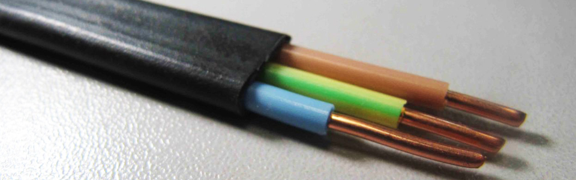Расшифровка: Винил-винил-голый. Материал изоляции жил и оболочки - поливинилхлорид. Голый означает гибкий, броня поверх оболочки отсутствует.
Сечение: 1-5 жил, 1,5-240 кв.мм.
Применяется: Ужесточение норм пожарной безопасности сильно ограничило применение данного типа кабеля.ВВГ следует использовать, прежде всего, для одиночной прокладки по эстакадам или кабеленесущим конструкциям, либо для времянки. Для прокладки кабеля в помещение следует использовать кабель ВВГнг, ВВГнг-LS, ВВГнг-FRLS.
ВВГнг
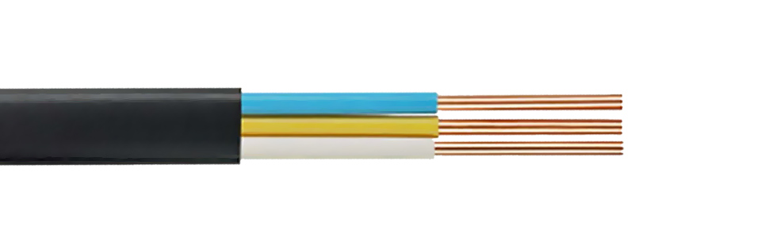Расшифровка: Винил-винил-голый. Материал изоляции жил и оболочки - поливинилхлорид. Голый означает гибкий, броня поверх оболочки отсутствует. Приставка НГ означает, что кабель не распространяет горение при одиночной и групповой прокладке, а просто ВВГ только при одиночной.
Сечение: 1-5 жил, 1,5-240 кв.мм.
Применяется: Кабель предназначен для одиночной и групповой прокладки с поправкой на объем горючей загрузки в производственных помещениях, кабельных сооружениях, наружных кабельных эстакадах, галереях. Исключается использование в кабельных помещениях жилых и общественных зданий, промышленных предприятий.
ВВГнг-LS
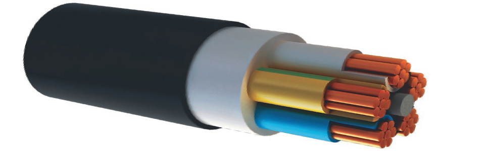Расшифровка: Винил-винил-голый. Материал изоляции жил и оболочки - поливинилхлорид. Голый означает гибкий, броня поверх оболочки отсутствует. Приставка НГ означает, что кабель не распространяет горение при одиночной и групповой прокладке. LS означает (Low Smoke) низкое дымогазовыделение
Сечение: 1-5 жил, 1,5-240 кв.мм.
Применяется: Кабели ВВГнг - LS относящиеся по пожарной опасности к классам П1.8.2.1.2 и П1.8.2.2.2 могут применяться для групповой прокладки в жилых и общественных зданиях, внутренних и наружных кабельных сооружениях на промышленных предприятиях. Разрешается использовать кабель на атомных объектах.
ВВГнг-FRLS
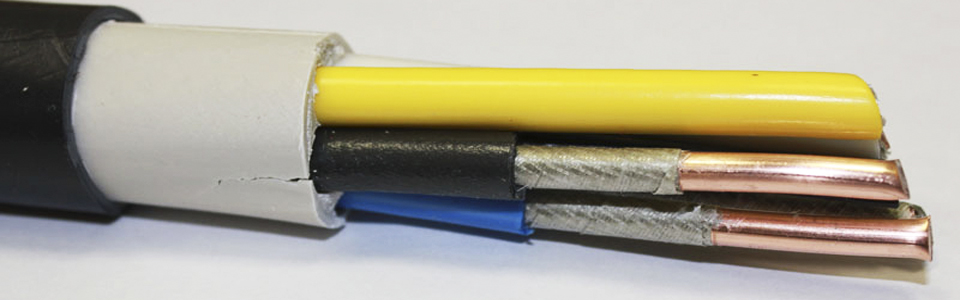Расшифровка: Винил-винил-голый. Материал изоляции жил и оболочки - поливинилхлорид. Голый означает гибкий, броня поверх оболочки отсутствует. Приставка НГ означает, что кабель не распространяет горение при одиночной и групповой прокладке. LS означает (Low Smoke) низкое дымогазовыделение. FR указывает на наличие барьера в виде обмотки медной жилы с двумя слюдосодержащими лентами
Сечение: 1-5 жил, 1,5-240 кв.мм.
Применяется: Конструкция силового кабеля позволяет использовать его в кабельных системах, сооружениях и помещениях с высокой вероятностью возникновения пожара. Так же кабель типа ВВГнг-FRLS нашел свое применение во взрывоопасных зонах различных классов. Исключение составляют только зоны, относящиеся к классу В-1. Не обходятся без такого силового кабеля и системы атомных станций классов 4,3 и 2. Огнестойкость кабеля составляет порядка 180 минут. Срок службы данного вида кабеля составляет 30 лет.
КВВГ
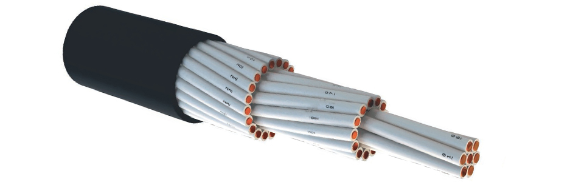Расшифровка: Кабель контрольный, винил-винил-голый с медными жилами, с ПВХ изоляцией в ПВХ оболочке
Сечение: 4-37 жил, 1,0-10 кв.мм.
Применяется: Для неподвижного присоединения к электрическим приборам, аппаратов и к зажимам распределительных устройств с номинальным переменным напряжением до 660В частотой до 100 Г. Для прокладки в помещениях, каналах, туннелях, в условиях агрессивной среды, при отсутствии механических воздействий на кабель.
АКВВГ
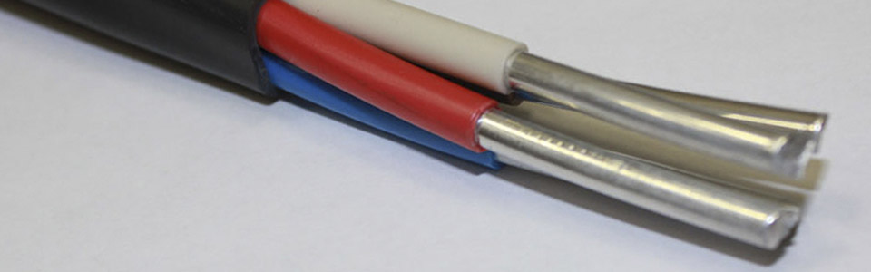Расшифровка: Кабель контрольный с алюминиевыми жилами, винил-винил-голый, с ПВХ изоляцией в ПВХ оболочке.
Сечение: 4-37 жил, 1,0-10 кв.мм.
Применяется: Для неподвижного присоединения к электрическим приборам, аппаратов и к зажимам распределительных устройств с номинальным переменным напряжением до 660В частотой до 100 Г. Для прокладки в помещениях, каналах, туннелях, в условиях агрессивной среды, при отсутствии механических воздействий на кабель.
АВВГнг
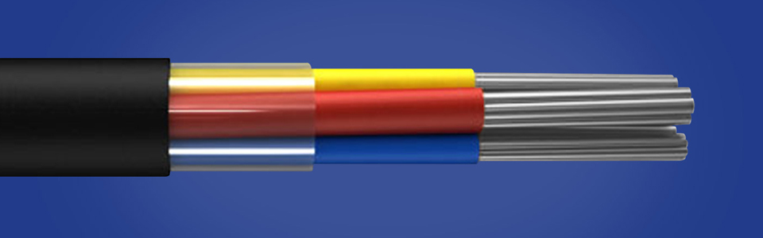Расшифровка: Кабель силовой алюминиевый винил винил голый.
Сечение: 1-5 жил, 2,5-240 кв.мм.
Применяется: Предназначены для передачи и распределения электрической энергии в стационарных установках на номинальное переменное напряжение 0,66 и 1 кВ частоты 50 Гц.
КГ
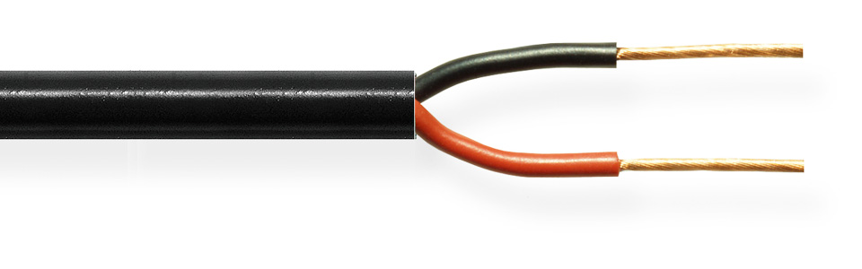Расшифровка: Кабель силовой гибкий с медными жилами.
Сечение: 2-5 жил, 1,0-240 кв.мм.
Применяется: Кабель силовой гибкий медный КГ предназначен для присоединения передвижных механизмов к электрическим сетям напряжение до 660 Вольт и частотой до 399 Герц, при рабочих изгибах не менее 88,8 миллиметров и температурой нагрева жил до 75 градусов Цельсия. Кабель КГ применяют для временного питания строительных объектов (освещения, инструмента, систем прогрева бетона и тд.), кабель КГ не предназначен для применения на подъемно-транспортном оборудовании.
КГН
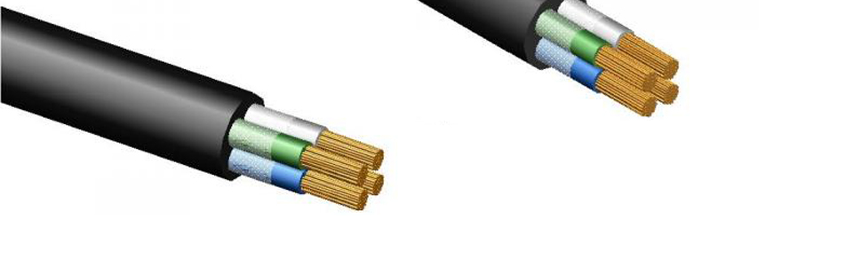Расшифровка: Кабель гибкий в резиновой маслостойкой не распространяющий горение оболочке.
Сечение: 1-5 жил, 0,75-120 кв.мм.
Применяется: Предназначены для присоединения передвижных механизмов к электрическим сетям на номинальное переменное напряжение 660 В частоты до 400 Гц или постоянное напряжение 1000 В. Кабели КГН предназначены для эксплуатации на суше, реках и озёрах в макроклиматических районах с умеренным климатом: в закрытых помещениях с естественной вентиляцией при отсутствии воздействия атмосферных осадков и солнечного излучения, а также в помещениях с повышенной влажностью воздуха (в том числе шахтах, подвалах, судовых и корабельных помещениях), в которых возможно длительное наличие или частая конденсация влаги на стенах и потолке. Устойчивый к воздействию смазочных масел, а также дезинфицирующих и агрессивных веществ, употребляемых в сельском хозяйстве. Не распространяют горение.
NYM
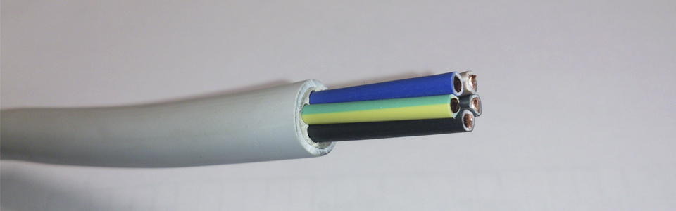Расшифровка: N-стандарт VDE, Y-изоляция из ПВХ, M-наличие защитной оболочки.
Сечение: 2-5 жил, 1,5-10 кв.мм.
Применяется: Кабель NYM применяется для электроснабжения промышленных установок стационарного присоединения приборов бытового назначения в стационарных установках. Возможна прокладка кабелей поверх штукатурки, в ней и под ней, в кирпичной кладке, в бетоне, трубах и каналах.
NYY-J
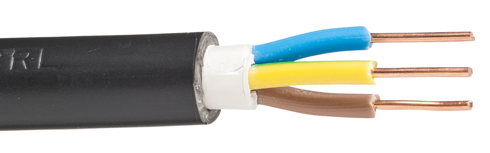Расшифровка: N-стандарт VDE, Y-изоляция из ПВХ, M-наличие защитной оболочки, J- наличие жилы Желто-зеленой цветовой гаммы.
Сечение: 2-5 жил, 1,5-10 кв.мм.
Применяется: Кабель NYM применяется для электроснабжения промышленных установок стационарного присоединения приборов бытового назначения в стационарных установках. Возможна прокладка кабелей поверх штукатурки, в ней и под ней, в кирпичной кладке, в бетоне, трубах и каналах.
ВБбШв
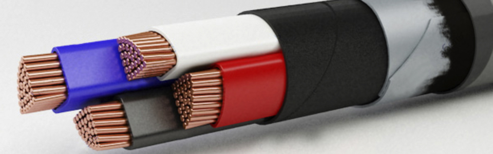Расшифровка: Поливинил. Броня из двух стальных лент. Без подушки защитного покрова, поливиниловый шланг защитный.
Сечение: С круглыми жилами 1-4, с секторными 3 жилы, с круглыми 1,5-240 кв.мм., с секторными 50-120 кв.мм.
Применяется: Для прокладки в земле (траншеях), помещениях, туннелях, каналах, шахтах (кроме прокладки в блоках), а также на открытом воздухе, если кабель не подвергается значительным растягивающим усилиям. Номинальное переменное напряжение 660 В и 1000 В частоты 50 Гц, одножильные кабели ВБбШв применяются в сетях постоянного напряжения.
АВБбШв
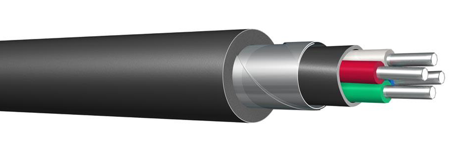Расшифровка: Кабель силовой алюминиевый винил броня, броня из двух оцинкованных лент, защитный шланг из выпресованного ПВХ пластика.
Сечение: 2-5 жил, 6-240 кв.мм.
Применяется: Для прокладки данных проводов в земле (траншеях), помещениях, тоннелях, каналах, шахтах (кроме прокладки в блоках), а также на открытом воздухе, если кабель не подвергается значительным растягивающим усилиям, но при наличии опасности механических повреждений в процессе эксплуатации.
АПвБбШп
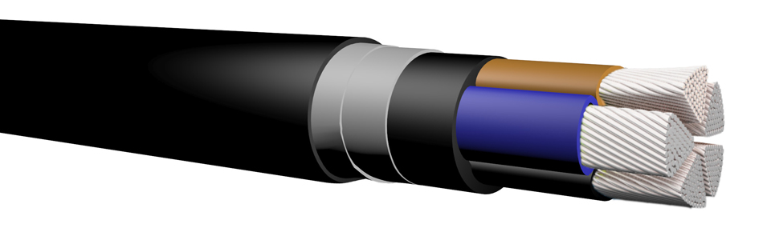Расшифровка: А - Алюминиевая токопроводящая жила, Пв - Изоляция жил из сшитого полиэтилена, Б - Броня из двух стальных лент, б - Без подушки, которая является вутренней частью защитного покрова, наложенная под броней с целью предохранения находящегося под ней элемента от коррозии и механических повреждений лентами или проволоками брони, Шп - Защитный покров в виде выпрессованного шланга из полиэтилена.
Сечение: 3+1, 4, 5 жил, для однопроволочной жилы 4-240 кв.мм., для многопроволочной 25-240 мм.кв.
Применяется: Силовые кабели предназначены для передачи и распределения электрической энергии в стационарных установках на номинальное переменное напряжение 1,0 кВ частоты 50Гц. Кабели изготавливаются для эксплуатации в районах с умеренным и холодным климатом. Кабели предназначены для эксплуатации на суше, реках и озерах на высотах до 4300 м. над уровнем моря. Кабели применяются для прокладки: в земле (траншеях) с низкой, средней или высокой коррозионной активностью, с наличием или отсутствием блуждающих токов, и если в процессе эксплуатации кабели не подвергаются значительным растягивающим усилиям; в грунтах с повышенной влажностью; в воде. Кабели предназначены для вертикальных, наклонных и горизонтальных трасс. Допустимый нагрев токопроводящих жил в аварийном режиме не должен превышать +130°С и продолжительность работы в аварийном режиме не должна быть более 6 часов в сутки. Срок службы - 30 лет.
КВБбШв
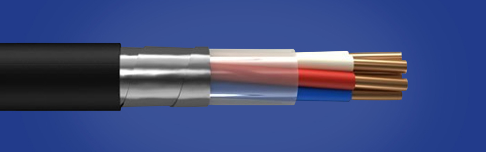Расшифровка: Кабель контрольный с медными жилами виниловый пониженной горючести броня из двух стальных пластин, защитный шланг из ПВХ .
Сечение: 4,5,7,10, 14,19, 27,37 жил, 0,75-6 мм.кв.
Применяется: Предназначены для неподвижного присоединения к электрическим приборам, аппаратам, сборкам зажимов электрических распределительных устройств с номинальным переменным напряжением до 660 В частотой до 100 Гц или постоянным напряжением до 1000 В, для прокладки в помещениях, каналах, туннелях, земле (траншеях), в том числе в условиях агрессивной среды и в местах, подверженных воздействию блуждающих токов, если кабель не подвергается значительным растягивающим усилиям.
ПБПП
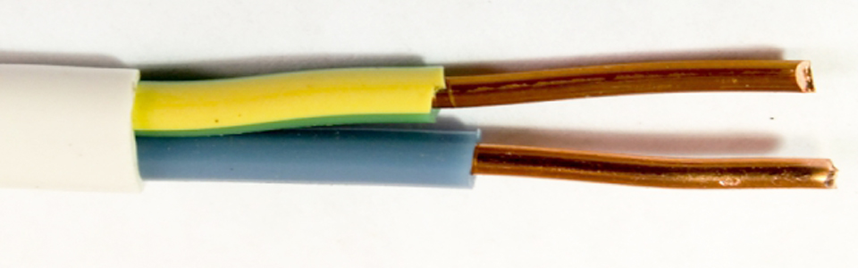Расшифровка: Провод бытового и промышленного назначения плоский.
Сечение: 2-3 жилы, 1,0-6 мм.кв.
Применяется: Провода бытового назначения на номинальное напряжение до 250 В частотой 50 Гц предназначены для неподвижной прокладки в осветительных сетях, монтажа и присоединения приборов слабого тока. Провода применяются в закрытых помещениях, в том числе при прокладке по деревянным конструкциям. Вид климатического исполнения У, категории 3, 4 по ГОСТ 15150-69. Выдерживают температуру окружающей среды от минус 15 до плюс 50°С. Не распространяют горение при одиночной прокладке.
ППГнг-HF
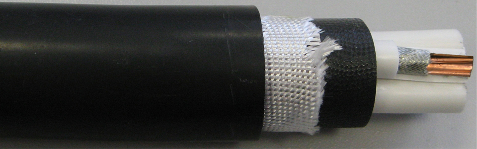Расшифровка: П-Изоляция на основе полиолефинов, Пнг-негорючая оболочка Г-отсутствие защитных покровов, HF-отсутствие галогенов.
Сечение: 1-5 жилы, 1,5-240 мм.кв.
Применяется: Кабель используют в общественных заведениях, таких как школы, больницы, торговые центры, бизнес-центры, метрополитен. При горении кабель выделяет меньше токсичных веществ, чем другие. Температурный диапазон эксплуатации кабеля составляет от -30 до + 50С. Монтаж кабеля ППГнг-HF можно осуществлять при минусовых температурах (до -15 С).
ПВС
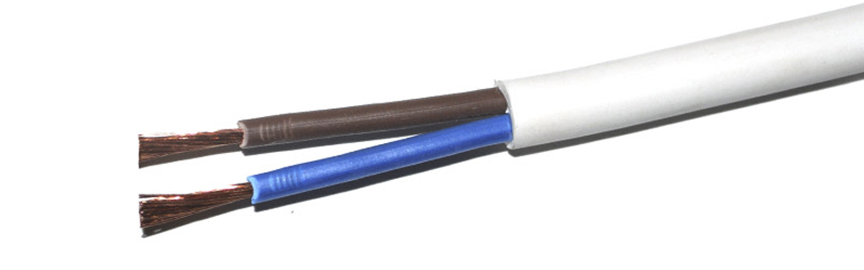Расшифровка: Провод виниловый соединительный.
Сечение: 2-8 жилы, 0,5-10 мм.кв.
Применяется: Провод соединительный. Предназначен для присоединения электроприборов и электроинструмента, стиральных машин, холодильников, средств малой механизации для садоводства и огородничества и других подобных машин и приборов, а также для изготовления удлинительных шнуров.
ШВВП
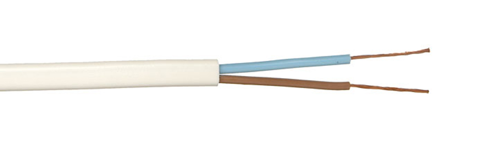Расшифровка: Шнур винил виниловый плоский.
Сечение: 2-3 жилы, 0,35-2,5 мм.кв.
Применяется: Шнуры соединительные. Предназначены для присоединения приборов личной гигиены и микроклимата, электропаяльников, светильников, кухонных электромеханических приборов, радиоэлектронной аппаратуры, стиральных машин, холодильников, и других подобных приборов, эксплуатируемых в жилых и административных помещениях, а также для изготовления удлинительных шнуров.
ПБППГ
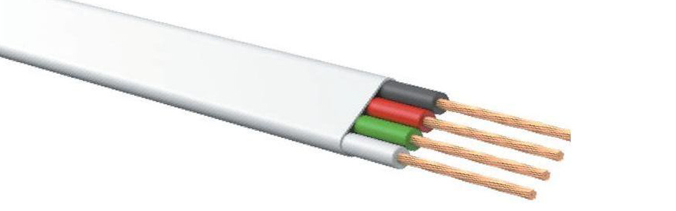Расшифровка: П - Провод, БП - Бытового и промышленного назначения, П - Плоский, Г – Гибкий.
Сечение: 2-3 жилы, 0,75-4 мм.кв.
Применяется: Провода марки ПБППГ предназначены для присоединения к осветительным сетям с номинальным напряжением до 250 В переменного тока частотой 50 Гц.